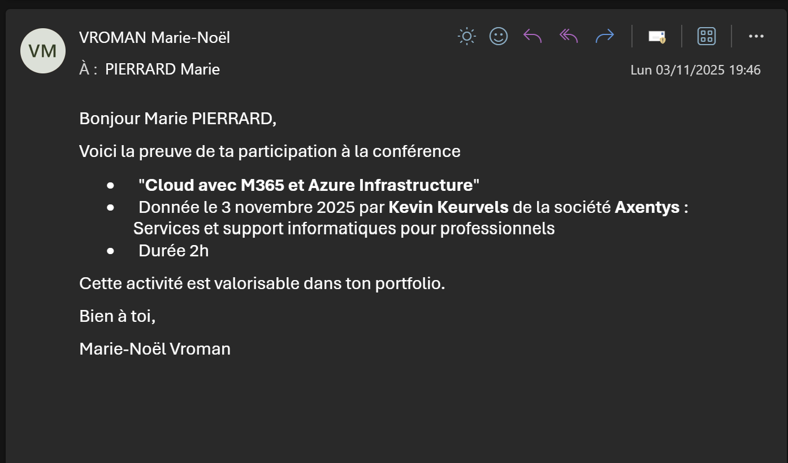

1. Cadre de l'activité
Dans le cadre de mes études à l'EPHEC, j'ai assisté à une conférence intitulée "Cloud avec M365 et Azure Infrastructure", organisée le 3 novembre 2025 et animée par Kevin Keurvels, expert chez Axentys, une société spécialisée dans les services et le support informatiques pour professionnels.
Cette conférence d'une durée de 2 heures avait pour objectif de présenter les solutions cloud de Microsoft, notamment Microsoft 365 et Azure, et d'expliquer comment ces technologies sont utilisées concrètement dans les entreprises pour gérer leurs infrastructures informatiques.
2. Ce que j'ai appris
Cette conférence m'a permis de découvrir l'univers du cloud computing appliqué aux entreprises. J'ai pu comprendre ce que représente concrètement Microsoft 365 au-delà des outils bureautiques classiques : la gestion des identités, la sécurité des données, la collaboration à distance et l'administration centralisée des utilisateurs via Azure Active Directory.
La partie sur Azure m'a particulièrement intéressée car elle m'a montré comment les entreprises déploient et gèrent leurs serveurs et applications directement dans le cloud, sans avoir besoin d'une infrastructure physique lourde. Kevin Keurvels a également abordé les enjeux de sécurité liés au cloud, un sujet que je trouve particulièrement pertinent après avoir participé au CyberSecurity Challenge.
3. Lien avec mon projet professionnel
Le cloud est aujourd'hui au coeur de l'informatique professionnelle, y compris dans le secteur de l'esport. Les grandes compétitions et plateformes gaming reposent sur des infrastructures cloud pour gérer les serveurs de jeu, les diffusions en direct et les données des joueurs. Comprendre ces technologies est donc essentiel pour quelqu'un qui souhaite travailler dans ce secteur.
Cette conférence m'a donné envie d'approfondir mes connaissances sur Azure et M365, des compétences très recherchées dans le marché de l'emploi IT. Elle s'inscrit directement dans mon projet professionnel en me permettant de développer une vision plus large des infrastructures informatiques modernes, bien au-delà du simple support technique.
4. Preuve de participation
